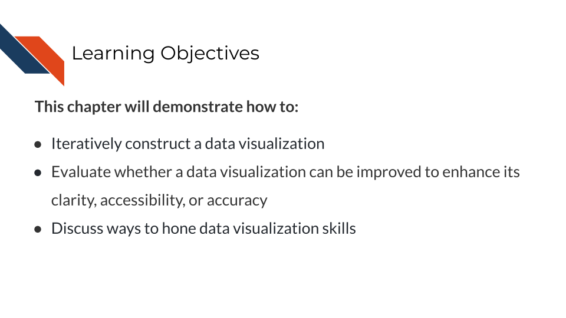
7 Wrapping up
7.1 Learning Objectives
7.2 Iterative Example
To summarize all of the considerations and best practices discussed in the chapters before this, the first section of this final chapter will walk through an example, step-by-step, of iteratively building up an expository data visualization.
7.2.1 Data Introduction
A 2017 survey from the University of British Columbia asked potential trick or treaters a series of questions. The main question provided a list of candy (and a few joke non-candy items) to survey takers. The prompt asked
Basically, consider that feeling you get when you receive this item in your Halloween haul. Does it make you really happy (joy)? Or is it something that you automatically place in the junk pile (despair)? Meh for indifference, and you can leave blank if you have no idea what the item is.
Using this dataset, we focused on responses to the question about feelings related to specific candies, selecting only real candy, for a total of 77 candies. For each of these candies, we computed the proportion of respondents who replied with each general feeling (e.g., Joy, Despair, Indifference, or No response).
R code for data import and preliminary wrangling steps
library(here)
library(tidyverse)
df_2017 <- read.csv(here("data/candyhierarchy2017.csv"), fileEncoding = "ISO-8859-1")
non_candy <- c("Bonkers the board game",
"Box o Raisins",
"Broken glow stick",
"Cash or other forms of legal tender",
"Chardonnay",
"Creepy Religious comics Chick Tracts",
"Dental paraphenalia",
"Generic Brand Acetaminophen",
"Glow sticks",
"Healthy Fruit",
"Hugs actual physical hugs",
"JoyJoy Mit Iodine",
"Kale smoothie",
"Green Party M M s",
"Independent M M s",
"Abstained from M M ing",
"Minibags of chips",
"Pencils",
"Real Housewives of Orange County Season 9 Blue Ray",
"Sandwich sized bags filled with BooBerry Crunch",
"Spotted Dick",
"Trail Mix",
"Vials of pure high fructose corn syrup for main lining into your vein",
"Vicodin",
"White Bread",
"Whole Wheat anything")
#making a dataframe with just candy feeling responses
## selecting columns related to Question 6 about feelings about candy. Each candy has its own column
## polishing the column names to remove "Q6", "." and white space
## selecting columns that are just the candy by excluding all of the non-candy
## using pivot_longer to make a column that has candy names (`column_name`) and responses of "JOY", "DESPAIR", or "MEH" in `value`
## each candy will have multiple rows because of pivot_longer use
## grouping by candy and the value to count (using `summarise`) the number of respondents who felt Joy, Despair, or Meh for each candy
## dropping the value grouping to sum counts to find total counts for each candy
## undoing all of the grouping
## finding a proportion for each row: candy and feeling combo
df_2017_jc <- df_2017 %>%
select(starts_with("Q6")) %>%
rename_with(~ str_remove(., "Q6...")) %>%
rename_with(~ str_replace_all(., "\\.", " ")) %>%
rename_with(~ str_trim(.x, side = "both")) %>%
select(-all_of(non_candy)) %>%
pivot_longer(everything(), names_to = "column_name", values_to = "value") %>%
group_by(column_name, value) %>%
summarise(count = n(), .groups = "drop_last") %>%
mutate(total = sum(count)) %>%
ungroup() %>%
mutate(proportion = count / total)
# replacing empty values with NA
df_2017_jc[df_2017_jc==""]<- NA
## replacing NA with "Not Answered"
## using pivot_wider to recollapse the data so that each candy has a single row
## there will be a column with proportions for each feeling
## arrange the data according to magnitude of joy proportions
to_plot <- df_2017_jc %>%
replace_na(list(value = "Not Answered")) %>%
pivot_wider(id_cols = column_name,
names_from = value,
values_from = proportion) %>%
arrange(JOY)What variables (specifically what types of variables – categorical or numerical) are part of this dataset as described?
Variables in the candy dataset
This means that the candy dataset (at least given the way we have worked with or “wrangled” it) has a few main variables of interest:
- Names of the candy
- A categorical variable
- 77 different values
- Proportion of respondents who reported joy
- A numerical variable
- Specifically a continuous numerical variable
- Bounded between 0 and 1.0
- 77 different values - one for each candy
- Proportion of respondents who reported despair
- A numerical variable
- Specifically a continuous numerical variable
- Bounded between 0 and 1.0
- 77 different values - one for each candy
There are additional variables such as responses to demographic questions as well as the proportion of respondents who reported indifference or didn’t respond at all. However, to simplify the message we wish to communicate with our data visualization, we won’t directly use these variables for this example.
To review variables and different types of data, visit Chapter 3
7.2.2 Goal
Our goal is to visualize a ranking for the most liked candies in 2017 according to this dataset.
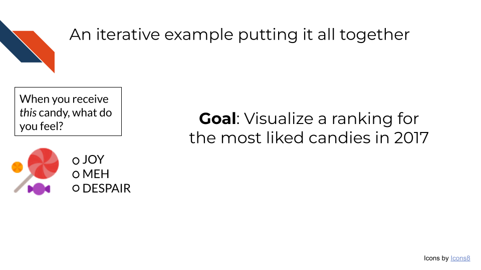
7.2.3 Choosing a plot type
Given the data that we have to work with and the goal of the visualization, what type of plot would you use?
Comparing and contrasting plot types for this visualization
Note that respondents did not simply rank the candy based on preference and we instead have two numerical values for each candy. Therefore we should probably consider plots types beyond the conventional ranking plots described in Chapter 4.
A more conventional approach:
A bar plot or even a stacked bar plot could work if we computed a single score (proportion of Joy - proportion of Despair perhaps), but with 77 candies, we would need to arrange the bars based on the magnitude or size and just focus on the bars on the extremes. The visualization would likely appear pretty cramped overall if we tried to show every candy.
Here’s an example of an analysis that utilized bar plots: https://github.com/phoebewong/candy-hierarchy-2017. Notice, for this example they focused on a couple specific candies which gets around the “cramped” visualization concern.
Similar to a bar plot is a lollipop chart (seems fitting for a candy dataset): https://x.com/ttrodrigz/status/923582440937021440. This example uses a log ratio rather than a difference for each candy, sorts based on magnitude, and then focuses on the extremes as expected.
A more unconventional approach:
A scatter plot is constructed with two numerical variables and is often used to show a correlation. We might expect our data to have some sort of a correlation because likely candy that is greatly enjoyed by many won’t be despised by many. And conversely, candy that is despised by many probably won’t be greatly enjoyed. The only way to see if this expectation is true is to explore the data and just plot it. So that’s what we’ll do for the first iteration.
To review different conventional plot types, visit Chapter 4.
7.2.4 Building the plot
The first few iterations will be an exploratory analysis of the data where we don’t focus on aesthetics, but rather
- what the data looks like
- if patterns match our expectations
- if our chosen plot style will work for us
- perhaps even hypothesis or idea generation
Then the remaining iterations will transition into polishing the visualization in order to prepare an expository data visualization.
To review the differences between exploratory and expository data visualizations, visit Chapter 2.
7.2.4.1 Iteration 1
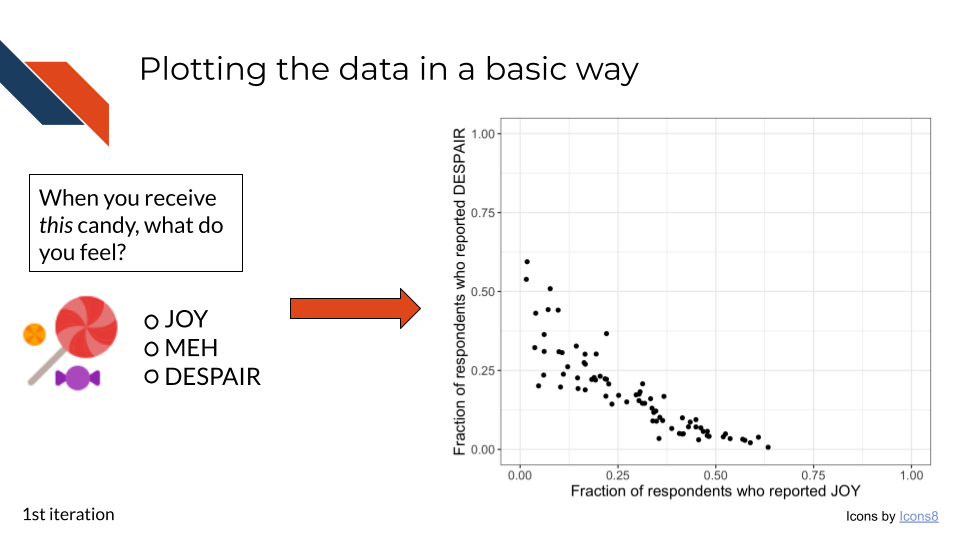
This iteration is an exploratory data analysis step. We’re not worried about making the plot look pretty yet. We just want to look at the data. Primarily we want to see whether or not the relationship that we expect between the joy and despair variables holds true.
R code for plotting a scatter plot
##proportion of Joy on x-axis
##proportion of Despair on the y-axis
##geom_point for scatter plot
##set xlim and ylim to 0,1 since our data is bounded that way
##theme_bw() is a quick way to adjust theme to make it simpler
##using labs to set quick axis labels
## setting overall text size just for example purposes
to_plot %>%
ggplot(aes(x=JOY,
y = DESPAIR
)) +
geom_point() +
xlim(0, 1) +
ylim(0, 1) +
theme_bw() +
labs(x = "Fraction of respondents who reported JOY",
y = "Fraction of respondents who reported DESPAIR") +
theme(text = element_text(size = 14))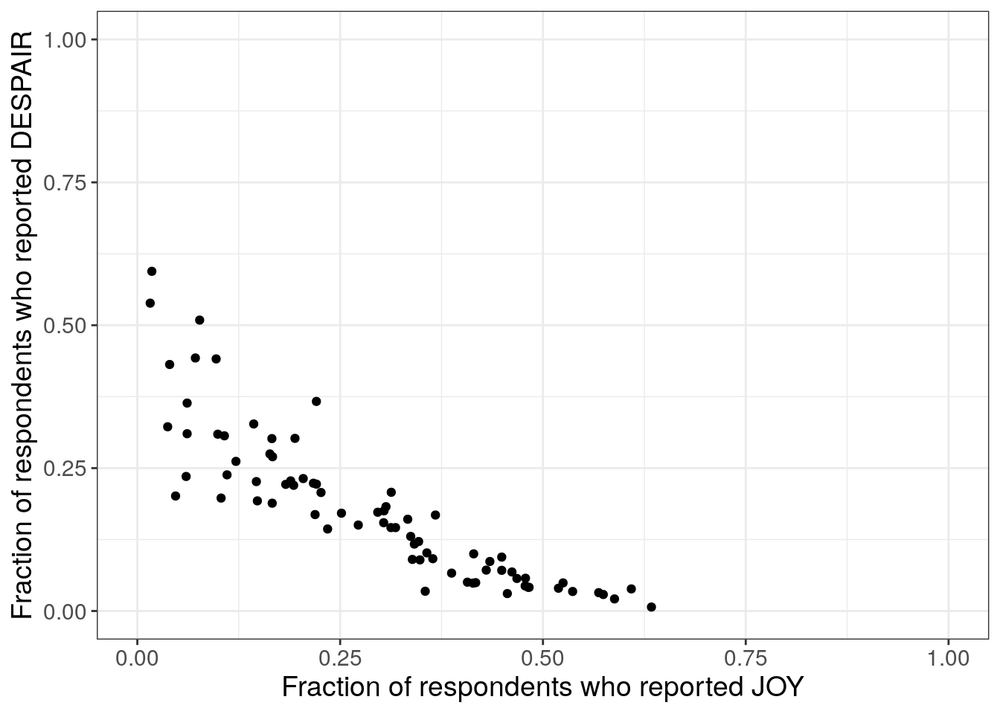
Note that normally in a first iteration of exploratory data analysis, we might not set the axis labels (they’ll default to the column name of whatever is being plotted.), and we might not adjust the text size. Both of these are done here to add clarity to this example.
So far, this is just using 2 of the 3 main variables we identified. How can we use the third variable?
Plotting the candy names
We can use a labeling function to add the candy names to the plot, labeling specific points.7.2.4.2 Iteration 2
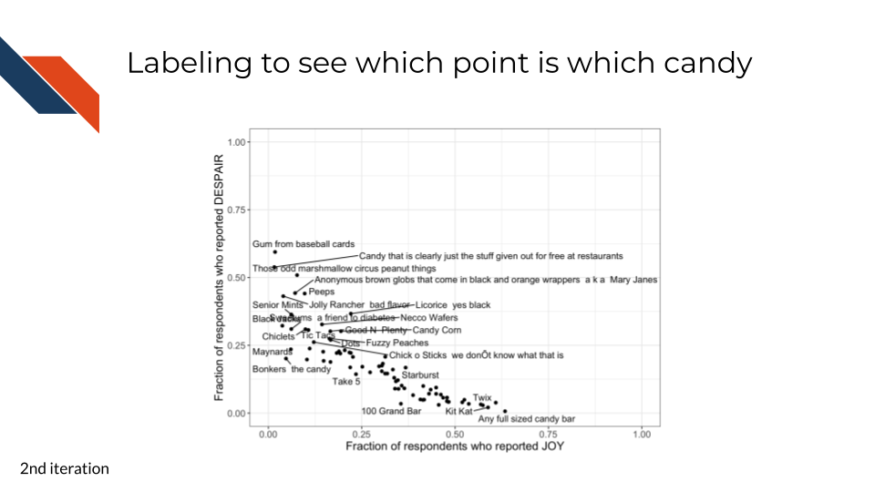
This is another exploratory data analysis step. Now that we’ve confirmed the relationship between the variables that we expected, we want to know what candies are the most highly ranked and what candies are the least highly ranked. We can use the categorical candy name variable for this and add labels directly to the points.
R code for adding the candy names as labels
install.packages("ggrepel")
library(ggrepel)
to_plot %>%
ggplot(aes(x=JOY,
y = DESPAIR,
label = column_name
)
) +
geom_point() +
xlim(0, 1) +
ylim(0, 1) +
theme_bw() +
geom_text_repel(show.legend = FALSE, max.overlaps = 20) +
labs(x = "Fraction of respondents who reported JOY",
y = "Fraction of respondents who reported DESPAIR") +
theme(text = element_text(size = 14))- 1
- Need to load this package for the labeling function
- 2
- Specifies the candy names/variable that will be used for labeling
- 3
-
Uses
geom_text_repel()fromggrepelpackage to label the points, using the repel part of the function to handle overlapping points/labels
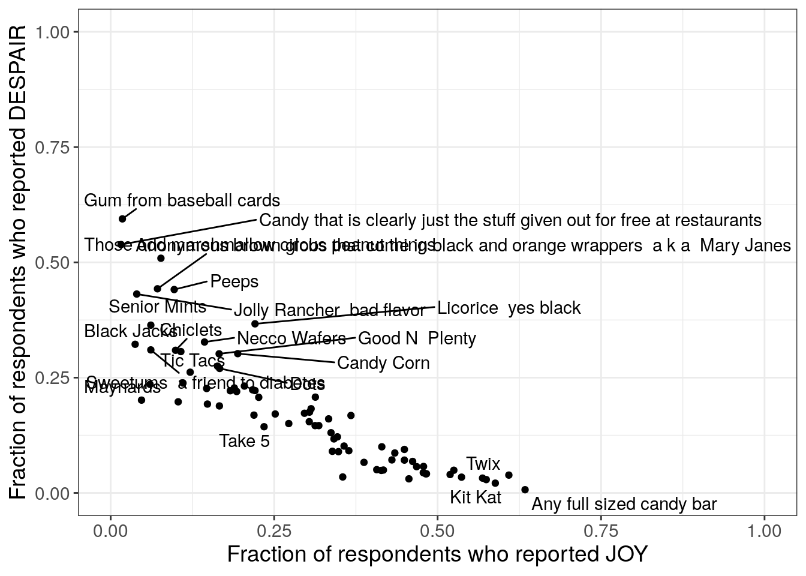
What do you notice after observing the labels? Do you have any ideas on new variables or a takeaway message?
Takeaways from the candy name labeling
It looks like chocolate candy (Twix, Kit Kat, 100 Grand Bar…) is among the most liked candy. It could be beneficial to create a new categorical variable that represents if each candy is chocolate or not.7.2.4.3 Iteration 3
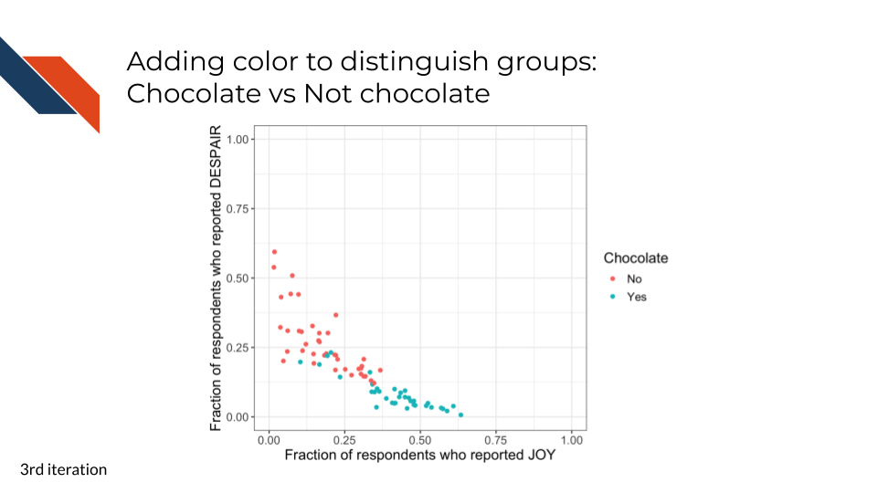
This iteration, uses color to distinguish the data points according to whether or not they represent a chocolate candy. We’ve removed the labeling for now (and will add it back later – labeling fewer or specific candies only). Note that we’re assuming that any full sized candy bar is chocolate since the majority of full sized candy bars tend to have chocolate.
#removed code related to the labeling for now
to_plot$Chocolate <- "No"
to_plot$Chocolate[c(13, 22, 26, 28, 34, 44,
46, 47, 49, 50, 51, 52,
54, 55, 56, 57, 58, 59,
60, 61, 62, 63, 64, 65,
66, 67, 68, 69, 70, 71,
72, 73, 74, 75, 76,77 )] <- "Yes"
to_plot %>%
ggplot(aes(x=JOY,
y = DESPAIR,
color = Chocolate)) +
geom_point() +
xlim(0, 1) +
ylim(0, 1) +
theme_bw() +
labs(x = "Fraction of respondents who reported JOY",
y = "Fraction of respondents who reported DESPAIR") +
theme(text = element_text(size = 14))- 4
- Create a new categorical variable
- 5
- Specify that color should use that new categorical variable
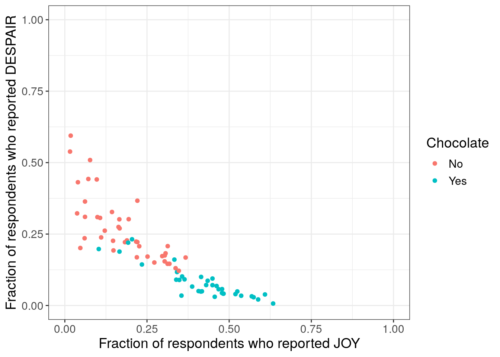
What do you observe about the group coloring?
Takeaways from the group coloring
It looks even more convincing that chocolate candy is among the most liked candy – a strong pattern that could be our takeaway message.7.2.4.4 Iteration 4
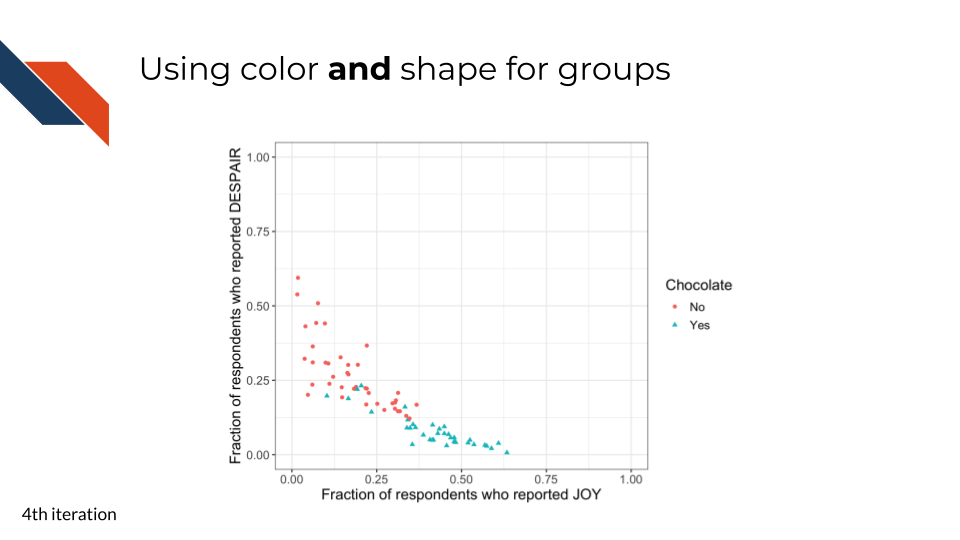
This is the first polishing iteration. As discussed in Chapter 5, to enhance accessibility, we don’t want to rely on color alone to distinguish groups. So we’ll also use shape to distinguish the groups. This is a bit redundant but can be beneficial to our future audience.
to_plot %>%
ggplot(aes(x=JOY,
y = DESPAIR,
color = Chocolate,
shape = Chocolate)) +
geom_point() +
xlim(0, 1) +
ylim(0, 1) +
theme_bw() +
labs(x = "Fraction of respondents who reported JOY",
y = "Fraction of respondents who reported DESPAIR") +
theme(text = element_text(size = 14))- 6
- Specify that the shape of the points should also display the chocolate/not-chocolate categorical variable.

7.2.4.5 Iteration 5
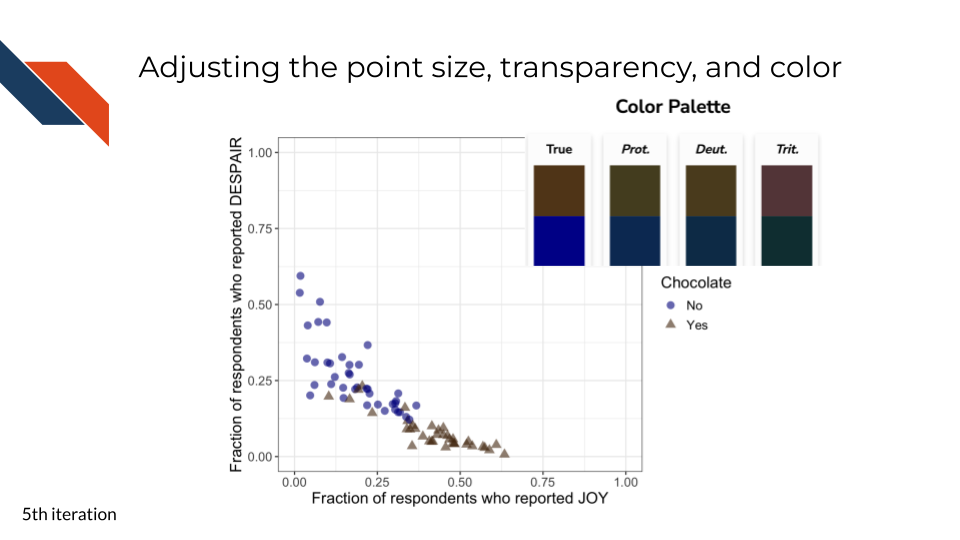
7.2.4.6 Iteration 6

7.2.4.7 Iteration 7
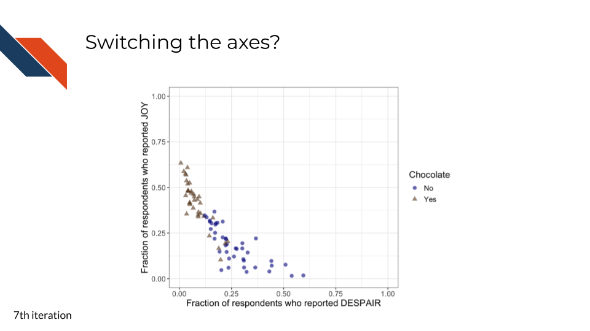
7.2.4.8 Iteration 8

7.2.4.9 Iteration 9

7.2.4.10 Iteration 10
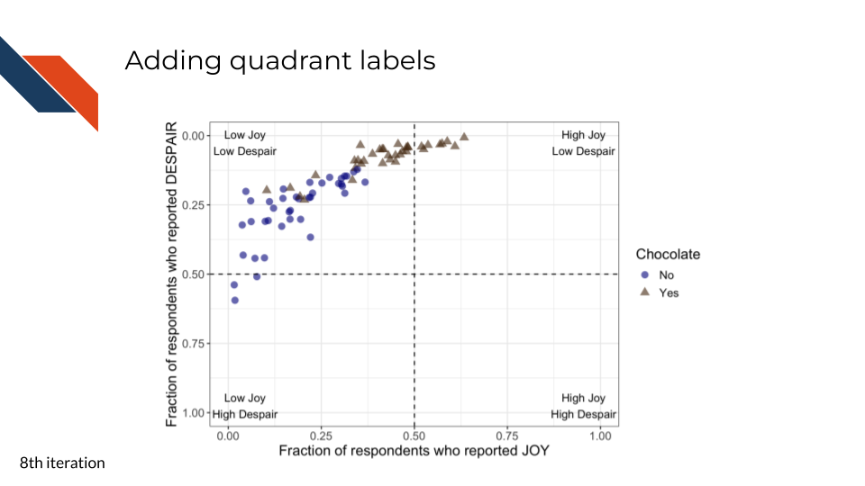
We want to add some labels to the quadrants in this plot. Viewers need to a quick way to know the signifiance of where the data points are with respect to the dashed lines.
This step is an example of how sometimes there is no “single right choice” when it comes to data visualization. Labeling the quadrants could be done in several ways. And if you’re in a setting where peak professionalism isn’t necessary, you could even have some fun here – perhaps using emojis instead of words!
7.2.4.11 Iteration 11
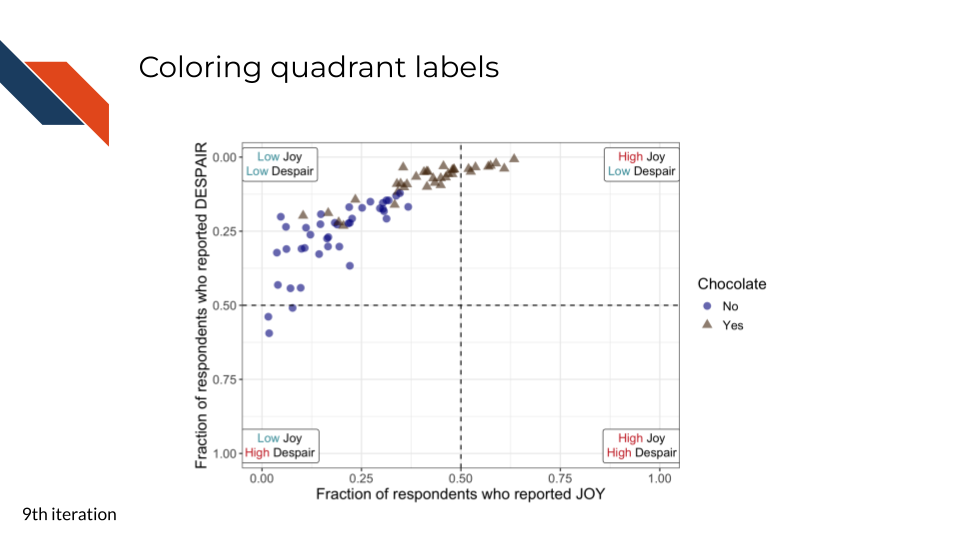
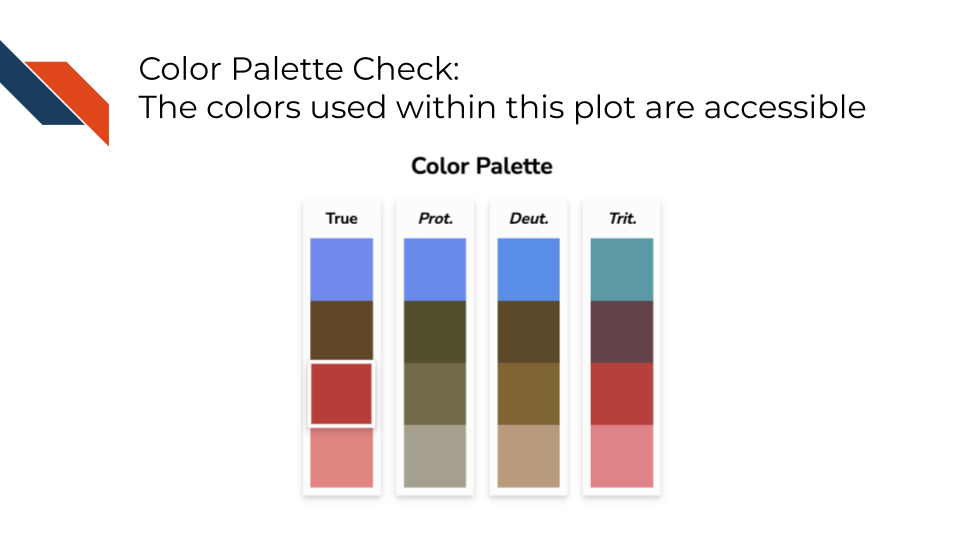
7.2.4.12 Iteration 12
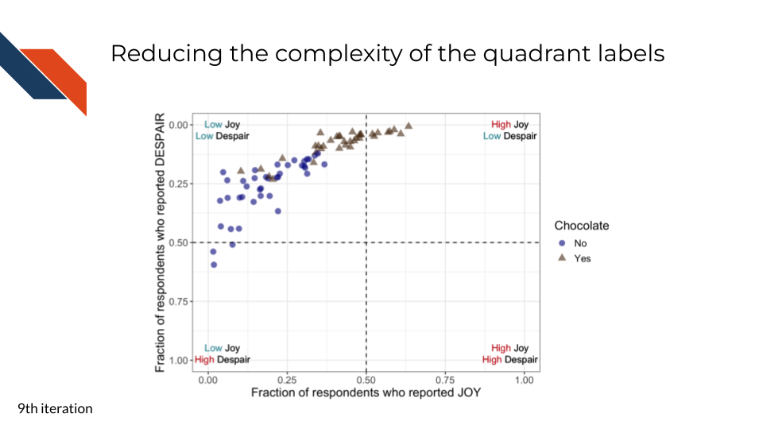
7.2.4.13 Iteration 13

7.2.4.14 Iteration 14

7.2.4.15 Iteration 15
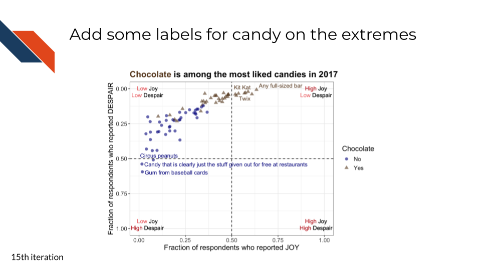
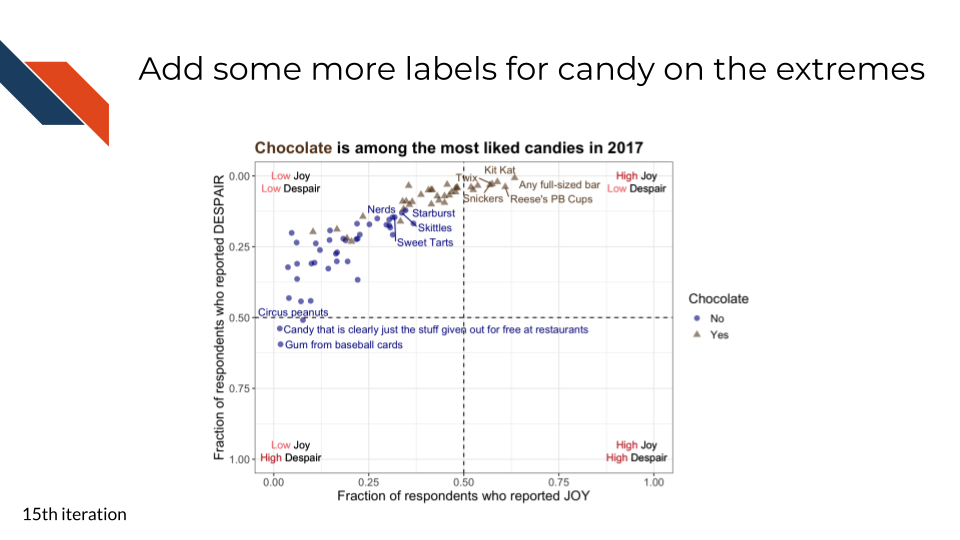
7.2.4.16 Iteration 16

7.2.4.17 Iteration 17
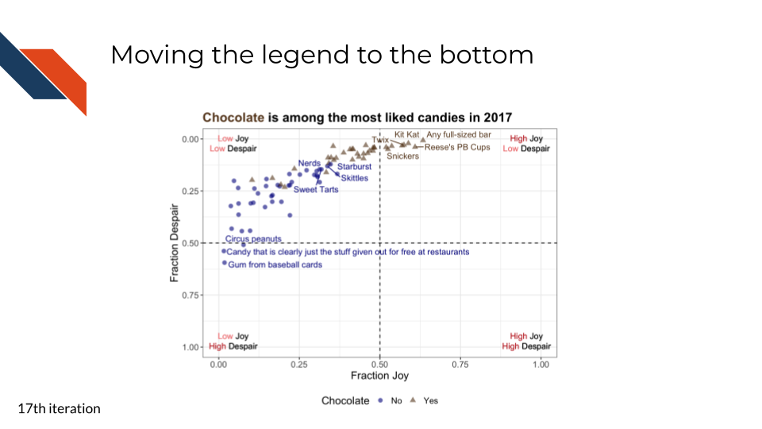
7.2.4.18 Iteration 18
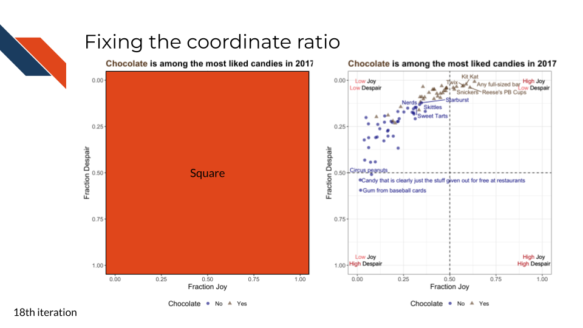
7.2.4.19 Iteration 19
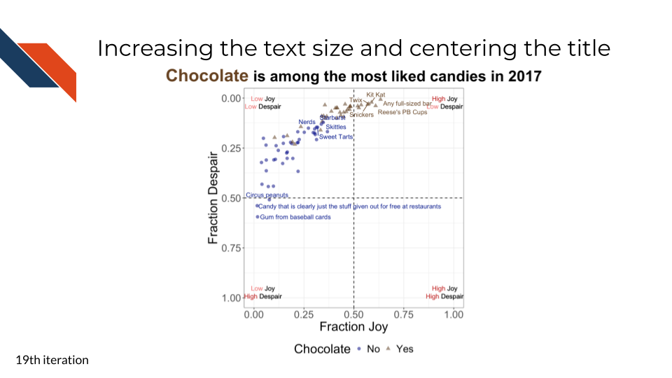
7.2.4.20 Iteration 20
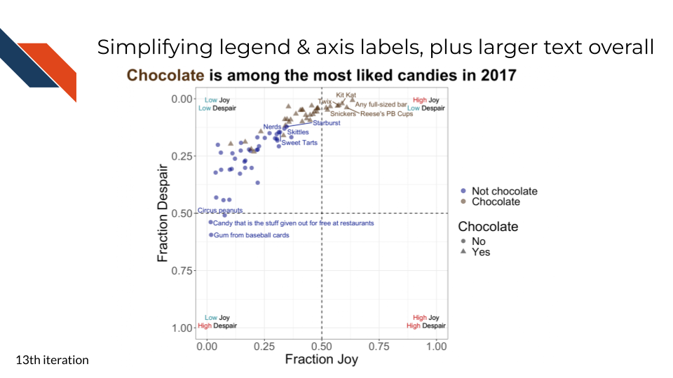

7.2.4.21 The plot!

But we’re not done yet….
7.2.4.22 The caption!
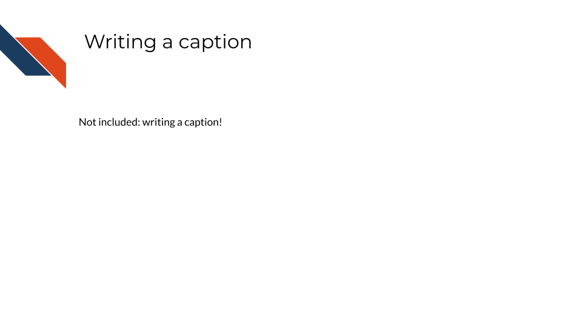
7.2.4.23 Going further
The dataset is an open dataset meaning that it is available for you to explore and visualize on your own!
Perhaps you are interested in whether there’s a difference in rankings depending on the sex of respondent or some other demographics. Do males prefer chocolate over non-chocolate candy? Does the age or location of the respondent impact the rankings?
Perhaps you are interested in how the proportion of indifference affects these rankings. Is there a design element that can be added to this plot to visualize that specifically?
Perhaps you’d like to try to plot this with a completely different plot type! Whatever your question – go for it! Practice is one of the best ways to improve your data visualization skills.
7.3 In Summary
Aim for understanding and readability over complexity. When you are working with your data and selecting your plot, think about what message you want to communicate.
7.4 Checklist
This checklist contains reminders of considerations and steps you should take while building your expository data visualization in order to minimize its complexity, enhance its clarity and accessibility, and assess its accuracy.
7.5 Keep Practicing!
Give some examples